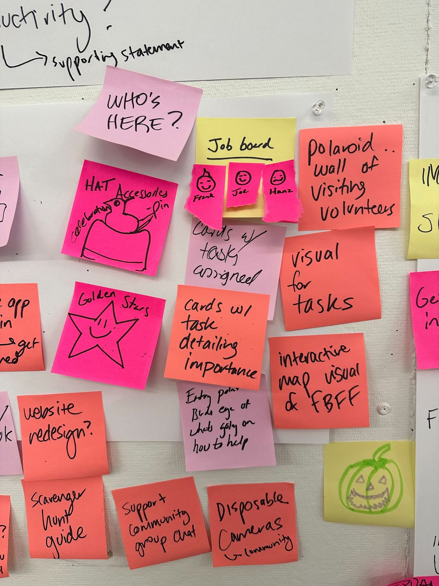

Summary
In our Interaction Design course, we conducted research on the Festival Beach Food Forest, a public food forest in Austin, TX. Our objective was to analyze its design, user interactions, and community impact to identify opportunities for growth and propose innovative solutions.
Course: Interaction Design (Fall 2022) at The University of Texas at Austin
Project Overview: Researching and experiencing the Festival Beach Food Forest to explore design improvements and community engagement opportunities.
Timeline: 4 Weeks
My Role
Position: Team Member
Responsibilities: I collaborated with a team to research and develop a solution to the identified challenges, contributing to conceptualization, ideation, and implementation. My role involved assisting with user research, identifying opportunities for improvement, and presenting our findings to stakeholders.
Teamwork: Collaborated with Niko Sabah, and Jessica Nguyen, guided by Professor Cathryn Ploehn.
Stakeholder: Festival Beach Food Forest
What is FBFF?
Festival Beach Food Forest is a grassroots pilot project in East Austin that has transformed two-thirds of an acre of City Park land near Lady Bird Lake into a thriving edible forest garden. As a community-driven initiative, it invites visitors to freely forage for fresh fruits, nuts, vegetables, and herbs while promoting the restoration and enrichment of public spaces. Volunteers play a vital role in maintaining the land and supporting its permaculture-based mission.
Problem Description
Festival Beach Food Forest depends on volunteers for maintenance but struggles with efficiently assigning tasks and providing effective education.
End Goal
Propose design solutions to the Festival Beach Food Forest team to enhance volunteer engagement and address operational challenges.
Process
Engulf: Immersive Experience
To understand the volunteer experience, its challenges, and areas for improvement, we first immersed ourselves in the Festival Beach Food Forest (FBFF) environment. This phase allowed us to directly engage with the space and its community-driven efforts.
Objectives
- Experience the Volunteer Process: Signed up to volunteer at FBFF to gain first-hand experience.
- Conduct Research: Gather insights through interviews, journey mapping, and ethnographic research.
Research Methods
- Interviews: Conducted informal interviews with volunteers, staff, and visitors to gather qualitative insights.
- Journey Mapping: Mapped the volunteer experience to highlight key moments, challenges, and opportunities for improvement.
- Ethnographic Research: Observed interactions and workflows to better understand the dynamics and challenges volunteers face.
Ethnographic Findings
- Austin, Texas
- Humid, Subtropical Climate
- East Austin, Festival Beach Food Forest near Lady Bird Lake and Highway 35
- Garden
- Volunteers
- Community members walking around
- Runners, families, students, children, couples
- Bugs, birds, homeless citizens, animals
- People with backgrounds in nature
- Plant life
- Tools
- People
- Animals and insects
- Dirt, water
- Gloves, big hats
Digging mulch, gardening, small conversations about how people got into volunteering and gardening, chatting after working, and a snack bar session during the last hour.
Steps or phases in the interactions:
- Connect with Niko
- Drive to the Food Forest
- Park
- Find Karen
- Get assigned a task
- Obtain tools
- Start the task
Understanding how people got into this initiative, satisfying hunger and thirst, and relieving exhaustion.
A sense of satisfaction from being able to contribute and feeling refreshed.


Journey Map
Interview Questions
To gain a deeper understanding of the volunteer experience at the Festival Beach Food Forest (FBFF), we conducted interviews with a few participants. The purpose was to gather valuable insights into their personal experiences and motivations. Below are the key questions that guided our interviews:
- How has your experience volunteering here impacted you personally?
- What aspects of this volunteer work fulfill you the most?
- Can you describe your favorite moment or memory from volunteering at FBFF?
- Do you feel a sense of belonging through your work here? How so?
- How do you feel connected to the environment while volunteering at FBFF?
- What improvements would you suggest for enhancing the volunteer experience at FBFF?
- What is something you wish you could gain from this experience that is not currently offered at FBFF?
- Would you consider returning to volunteer in the future? Why or why not?
- If given the opportunity, who would you invite to volunteer with you at FBFF? Why?
These questions helped to uncover not only the emotional connection volunteers feel toward the FBFF but also provided valuable feedback for potential areas of improvement.
Volunteer Interview Feedback
Below is the feedback we received from one of our dedicated volunteers, Jake, who has volunteered at the Festival Beach Food Forest multiple times. His responses offer valuable insight into the personal impact and motivations behind his volunteer experience:
Volunteer: Jake
Occupation: Bartender from Austin, working in the restaurant industry as a bar manager and bartender.
How has your experience volunteering here impacted you personally?
Jake has found the experience to be a contrast to his often high-stress job in the bar industry. Volunteering at the Festival Beach Food Forest has allowed him to connect to the land, providing a peaceful escape from the daily grind.
What aspects of this volunteer work fulfill you the most?
He enjoys the opportunity to contribute to something successful within the community without the responsibility of managing an entire garden by himself. The communal aspect of working together on something meaningful resonates with him.
Can you describe your favorite moment or memory from volunteering at FBFF?
Jake appreciates the connections he’s made with others at the Food Forest. He mentioned how refreshing it is to see people come together to work toward a common goal and be a part of something positive for the local community.
Do you feel a sense of belonging through your work here? How so?
Yes, Jake feels a strong sense of belonging. Being part of a team working toward a common mission in a community-driven space has provided him with a feeling of connectedness and purpose.
How do you feel connected to the environment while volunteering at FBFF?
Jake values the hands-on experience of working with the land and plants. This has helped him feel more in tune with nature, offering a grounding and refreshing experience that contrasts with the fast-paced nature of his professional life.
What improvements would you suggest for enhancing the volunteer experience at FBFF?
While Jake hasn’t expressed a strong desire for major changes, he would love to see more opportunities to integrate fresh, local ingredients into businesses like bars, moving beyond the often-used "farm to table" concept that can sometimes feel inauthentic.
What is something you wish you could gain from this experience that is not currently offered at FBFF?
Jake is interested in exploring the idea of small-scale gardening in urban spaces, such as high-rise apartments. He sees potential in growing ingredients that could be used in bars, particularly since bar-related plants tend to be smaller in size and more manageable for small spaces.
Would you consider returning to volunteer in the future? Why or why not?
Yes, Jake would absolutely return to volunteer at FBFF. He appreciates the sense of community and the opportunity to connect with nature, which he finds rejuvenating and fulfilling outside of his busy bar work.
If given the opportunity, who would you invite to volunteer with you at FBFF? Why?
Jake would invite his colleagues from the restaurant industry to join him in volunteering at FBFF. He believes that working together in such a positive, community-driven space would help them better appreciate the value of fresh, local ingredients and foster deeper connections to the food they serve.
Below is the feedback we received from one of our dedicated volunteers, Alexa, a professor who has been involved with the Festival Beach Food Forest (FBFF) for the past year. Her responses offer valuable insight into her personal experience and motivations:
Volunteer: Alexa
Occupation: Professor, specializing in environmental science and ecology.
How did you find out about FBFF?
Alexa has been a part of FBFF's projects for the past 5-7 years. When she moved to Austin for her job, Google Maps showed the food forest as a place she could visit. She initially thought it was just a public park, but something about it spoke to her, and she decided to check it out.
How long have you been involved with FBFF?
Alexa has been volunteering at FBFF for about a year now.
Have you had prior experience with similar volunteer work?
Yes, Alexa has been involved with environmental and ecological projects for 5-7 years, including getting certified in permaculture. She brings a wealth of experience from her previous work in this field.
What motivates you to volunteer at FBFF?
Alexa is motivated by the opportunity to contribute to ecological restoration and sustainability. As outlined in the project brief, restoring local ecology and helping to create a positive impact in the community is where she feels she fits in at this stage of her life.
How has volunteering at FBFF impacted you personally?
When Alexa first moved to Austin, she only had one friend and was seeking ways to feel more connected to her new city. Volunteering at FBFF has allowed her to become a part of Austin beyond just being a professor. A year later, she feels much more interconnected with the community. She has developed a deep understanding of the local ecology, including knowledge of invasive species, and can now identify plants as she walks around campus, which has given her a sense of place and belonging.
What aspects of this volunteer work fulfill you the most?
Alexa finds fulfillment in being able to contribute to the city’s ecological restoration efforts. It’s not just about being a resident who does “normal things” — it’s about giving back to the city and being a reciprocal part of what makes Austin unique. She feels like she is leaving her footprint in a meaningful way.
Can you describe your favorite moment or memory from volunteering at FBFF?
One of Alexa’s favorite moments was when Karen, a fellow volunteer, brought tea made from roses grown in the food forest. After a long workday, sitting down with others and drinking the refreshing tea felt like a perfect way to end the day. It’s moments like these that she treasures the most — when the essence of the space and the community come together in such a simple, yet meaningful way.
How can your volunteer experience be improved?
While Alexa enjoys her time volunteering, she feels there could be improvements in the social integration of new volunteers. Sometimes, the social dynamics can feel a bit awkward or isolating, especially when the people she meets aren’t particularly open. There are occasions when leaders of the tasks don't introduce themselves or explain the goals of the work, which can leave volunteers feeling disconnected. A little more effort in making people feel welcomed and socially integrated would enhance the overall experience.
What is something you wish you could gain from this experience that is not currently offered at FBFF?
One thing Alexa wishes is that she had a better sense of the bigger picture when she volunteers. When she arrives, especially if she’s late, she sometimes doesn’t know what’s happening or how her efforts fit into the larger scope of the project. More communication about the overall goals and the impact of the volunteer work would help her feel more connected to the mission.
Would you consider returning to volunteer in the future? Why or why not?
Yes, Alexa would definitely return to volunteer at FBFF. She enjoys the sense of purpose, community, and connection she feels while contributing to ecological restoration. The work is fulfilling, and she believes the space has enriched her life in ways she didn’t expect.
If given the opportunity, who would you invite to volunteer with you at FBFF? Why?
Alexa would invite her friends, especially those who have an interest in ecology or environmental science. She believes they would appreciate the opportunity to contribute to something meaningful and experience the community at FBFF.
Is there anything else you would like to add about your experience?
Alexa’s favorite plant is the elder-bush plant, which she finds to be a good presence in the space. It’s a medicinal plant, though it can easily die under stress. She admires the plant’s resilience, which mirrors her own experience of contributing to the community in ways that require effort but ultimately make a meaningful difference.
Interview Insights
The responses shared in this interview reveal several important insights into the volunteer experience at Festival Beach Food Forest:
- Volunteers are drawn by a desire to help the environment and work outdoors. There is a recurring theme of people seeking a tangible way to contribute to ecological restoration and sustainability while reconnecting with the land in a hands-on way.
- There is strong alignment between permaculture values and the mission of FBFF. Many volunteers arrive with either existing knowledge of permaculture or a curiosity to learn more, showing a readiness to participate in environmentally mindful practices.
- Fulfillment comes from contributing to a larger cause. Volunteering here is not just about individual impact—it provides people with the sense that their labor is meaningful and part of a collective effort to improve local ecosystems.
- Volunteering creates a deeper connection to Austin. For those new to the city or seeking community, FBFF becomes a meaningful space to feel rooted and build a sense of belonging. Over time, volunteers feel more integrated with the ecology and culture of the city.
- Shared rituals and small moments help create lasting memories. Experiences like drinking herbal tea after a long morning of work highlight how simple, thoughtful rituals can become anchors of connection, reward, and community bonding.
- Social integration can be inconsistent. While some volunteers are warmly welcomed and introduced by leaders, others describe a lack of clarity or community during their time on site. Small gestures like name introductions and check-ins could greatly enhance the experience.
- The volunteer group tends to attract nature lovers. There is overlap between those who enjoy hiking, spending time outdoors, and those who want to support a community garden—making FBFF a natural fit for these interests.
- Volunteers want to contribute beyond manual labor. Some bring unique skills (e.g. design, tech, organizing) and hope to find more opportunities to apply them within the project. There's untapped potential to better match skill sets with organizational needs.
- Volunteers appreciate context and communication. Newcomers sometimes lack understanding of how their work fits into the broader mission. Consistent orientation and explanations could help deepen commitment and clarity.
- There is a willingness to learn and grow through the experience. Volunteers aren’t just looking to give—they’re looking to grow their own understanding of plants, ecosystems, and community-based care. FBFF fosters this learning in both subtle and direct ways.
FBFF Archetypes
Big Hats
Needs: Participation, responsibility
Unmet Needs: Needs X, Y, and Z are not being met.
Challenges: May not know how to introduce new volunteers to work, juggling multiple things at once.
Feelings: Excited, pumped, and fulfilled when new volunteers arrive.
Harmony Requirements: Needs volunteers at work and enjoying their work to feel in harmony at the Food Forest.
Design Implications: Affordances that guide and keep volunteers moving could help provide harmony. Being everywhere at once and personally ensuring contentment for each volunteer is not feasible.
Opportunities: More social integration and breaks could help achieve harmony.
Successes: Content and fulfilled volunteers are already working for this stakeholder.
New Volunteer
Needs: Get involved, find community, connect with local ecology, converse with like-minded individuals, do something outside the typical, slow down, relax.
Unmet Needs: May not have appropriate attire/gloves. Unsure where to start, felt funny conversing at first, gets in their head about lack of knowledge, the elements/heat.
Feelings: Contributing feels satisfying, seeing the difference, joy of group accomplishment.
Guidance Needs: Needs guidance to feel satisfaction, recognition for their help, or visual/physical validation of work completed.
Design Implications: Affordances that direct newcomers, introduce them to other volunteers, and help them understand what they are doing could provide harmony. The physical challenges and unfamiliar environment should be addressed.
Constraints: Limited visibility, difficulty understanding the impact of work, and lack of gratification are challenges for this stakeholder.
Successes: Desire to help and satisfaction from contributing in any way is working for this stakeholder.
Veterans
Needs: Stress relief through volunteering, going outdoors, and responsibility (tending to their region).
Unmet Needs: Desire for more learning opportunities (one interviewee expressed wanting more knowledge but not receiving it).
Feelings: Feel somewhat fulfilled, helpful, reciprocative, and grounded through participation.
Design Implications: Needs a team to feel unity. Interaction with others is important, and work tasks should contribute to a sense of participation and fulfillment.
Harmony Requirements: Achieving harmony can be supported by everyone having tasks and working for the same cause.
Opportunities: Collaboration with others and attending Food Forest events help create a sense of harmony.
Ideation
Overview:
Our team is focused on developing "rituals" designed to enhance the volunteer experience at the Food Forest. These rituals aim to cultivate a sense of belonging and responsibility, ensuring that every volunteer feels valued and engaged throughout their journey.
Key Questions to Address:
- How might we empower new and less experienced volunteers to take on greater responsibility while fostering engagement, fulfillment, and continued involvement?
- How can we streamline task delegation for experienced volunteers (referred to as "Big Hats"), who often juggle multiple priorities, to improve overall productivity and efficiency?

Focused Ideas
Concept Sketches - Peter Ahloy
Interactive Map - Sticker Collection - Map to Cup Recycle
Concept Sketches - Niko Sabah
Task Board
Concept Sketches - Jessica Nguyen
Cards for Hat Trade
How This Design Meets Design Justice Principles
Design from patterns to details: By observing seasonal rhythms and understanding the evolving needs of the food forest, this design approach supports thoughtful delegation of tasks over time. Volunteers are engaged through clear, purposeful roles that evolve naturally with the space.
Use edges and value the marginal: The design emphasizes the importance of orientation and accessibility. A system for navigation and participation ensures no one feels out of place. Everyone—regardless of experience—is valued and can find a sense of belonging and grounding when they visit the food forest.
Future Things to Consider
- Volunteer Onboarding: How can new or returning volunteers easily orient themselves upon arrival? Consider low-tech and high-tech methods of navigation or welcome.
- Social Integration: How might we foster organic, low-pressure social interactions among volunteers of different backgrounds and comfort levels?
- Clarity of Purpose: Are volunteers aware of how their labor contributes to the larger seasonal or ecological goals of the food forest?
- Consistency in Leadership: Can clearer introductions or routines by task leaders help build community and reduce moments of awkwardness?
- Visibility of Skills: How might volunteers with non-agricultural skills (e.g. design, tech, communications) be better recognized and integrated into the ecosystem of contributions?
- Design Justice in Practice: Are marginalized voices shaping the flow, rituals, and signage of this space—or just responding to it?
- Scalability: Could these design elements be extended or adapted for other community gardens or outdoor spaces?
Key Learning Experiences
- Empathy in Design: Understanding volunteer challenges and motivations helped shape user-centered solutions.
- Ethnographic Research: Conducting interviews and observations provided valuable insights into real-world behaviors and needs.
- Collaborative Ideation: Brainstorming with a team strengthened problem-solving and creative thinking skills.
- Task Delegation Strategies: Learning how to optimize workflows for volunteers improved efficiency and engagement.
- Community-Centered Design: Designing for a public space required considering accessibility, sustainability, and social impact.
- Prototyping and Testing: Creating and iterating on solutions helped refine ideas based on real feedback.
- Project Documentation: Structuring findings, insights, and processes improved communication and storytelling skills.
- Environmental Awareness: Gaining a deeper understanding of how urban green spaces impact biodiversity, air quality, and overall well-being.
- Sustainability Practices: Exploring how community gardens promote local food production, reduce waste, and support ecosystem health.
- Regenerative Design Thinking: Recognizing the role of regenerative agriculture and permaculture in building sustainable communities.
- Nature as a Stress Reliever: Experiencing firsthand how engaging with green spaces fosters mental and emotional well-being.
- Long-Term Impact: Realizing that small-scale environmental efforts, like maintaining a food forest, contribute to broader sustainability goals.
Outcomes
As a result of volunteer feedback and ideation, the Festival Beach Food Forest (FBFF) has implemented a combination of ideas to enhance the volunteer experience:
- Interactive Maps: Volunteers now have access to detailed maps that guide them through different areas of the Food Forest, helping them navigate and understand the landscape more effectively.
- Daily Task Board: A central task board has been introduced to outline daily activities and priorities, allowing volunteers to choose tasks that align with their skills and interests.
These changes have provided volunteers with more clarity, autonomy, and engagement, fostering a stronger sense of purpose within the community.